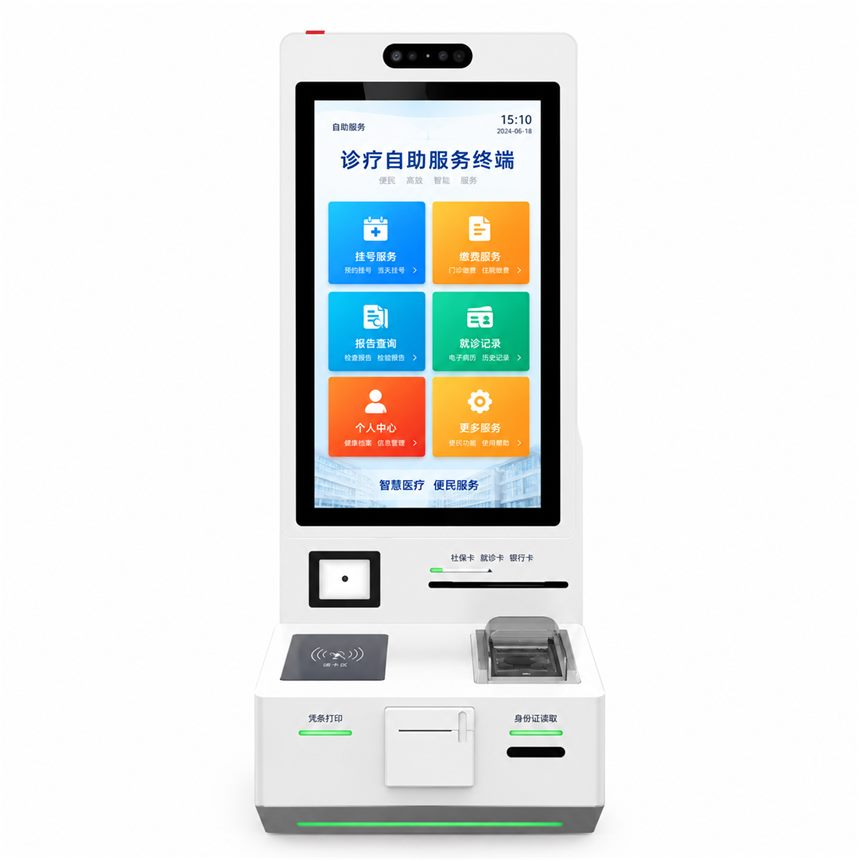

Clinic Self-Service Terminal with Card Dispenser
A clinic terminal that handles registration, payment, report printing and record printing, with a card dispenser built into the base.
Operating system support
One cabinet, three platform routes. The choice depends on your software, drivers and how much local maintenance you want to allow.
Windows
Windows builds suit clinic management clients that call card dispenser and printer DLLs.
Android
Android builds suit an app-based visit flow with the dispenser driven by SDK.
Linux
Linux builds suit a locked image that exposes the dispenser to one trusted application only.
Embedded modules
Modules listed below are the ones visible on this unit. Each is integrated inside the cabinet, powered and routed through the internal harness, and exposed to your application through the platform's drivers or SDK.
- Vertical touchscreen
- Card dispenser
- Contactless reader
- Receipt printer
- ID reading
Optional modules for custom builds
The modules shown on this unit are the reference build. The modules below can be added inside the same enclosure when your project needs identity verification or document capture — placement, interface and certification are confirmed per project.
Fingerprint terminal
A fingerprint capture module for identity verification at registration, access control or payment steps. Sensor type, capture window position and SDK support are agreed during specification.
Passport reader
A passport and travel-document reader for identity checks at hotel, transport and public-service counters. MRZ reading is standard; chip reading depends on the reader module selected.
Face recognition camera
A camera module for face-based check-in, liveness checks or queue pre-registration, subject to local privacy rules and the identity platform you already run.
Further modules — cash handling, A4 document printing, NFC, barcode scanning, card dispensing, custom keypads or a second display — can also be reviewed on request. Module combinations are customized to customer requirements: send the list and we reply with what fits this cabinet, what needs a new enclosure and what the certification path looks like.
Typical applications
Community clinic registration and card issue
Payment of consultation fees
Report and visit record printing
Configuration options
Options to discuss for your project. Final specifications, module compatibility and ratings are confirmed in writing before an order.
- Card dispenser type, capacity and reload path
- Contactless pad, ID reader and receipt printer set
- Report printing module and paper path
- Cabinet finish and clinic branding
- Windows, Android or Linux with your clinic software
Before you request a quote
What card format is dispensed and how is it reloaded?
Which report formats must print unattended?
How is an incomplete card return handled?
Request a quote
Send the application, the peripherals you need, your operating system choice and the estimated quantity. We reply with the closest build, the open questions and the next step.